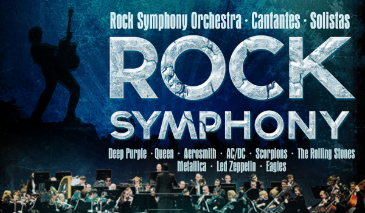
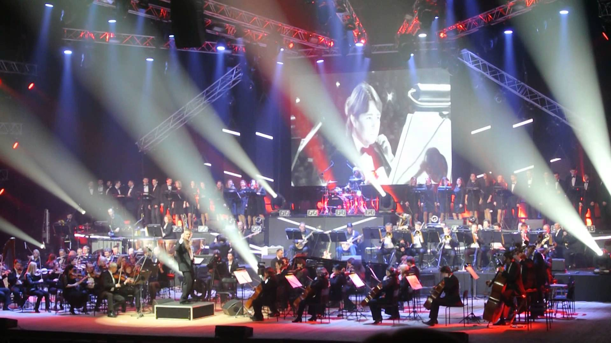

Потужне насичене звучання ВЕЛИКОГО СИМФОНІЧНОГО ОРКЕСТРУ, ХОРУ та РОК-БЕНДУ!
1 травня Ви почуєте НАЙВЕЛИЧНІШІ СВІТОВІ ХІТИ!
140 АРТИСТІВ НА СЦЕНІ
Симфорок - вершина мистецтва сучасного світу. “Рок Симфонія” звучить дуже цілісно, треки непомітно змінюються один на інший, формуючи єдиний монолітний твір. Злиття віртуозних інструментів хор та оркестру створює непередавані відчуття. Емоції на концерті змінюються від бурхливого захоплення до тихої ліричної насолоди мелодійними звуками. Враження від кожної н аступної композиції нашаровуються на враження від попередніх, і в самому кінці звучить стрімкий, динамічний, віртуозний фінал, підриваючи емоції і доставляючи глядачеві непередаване задоволення!